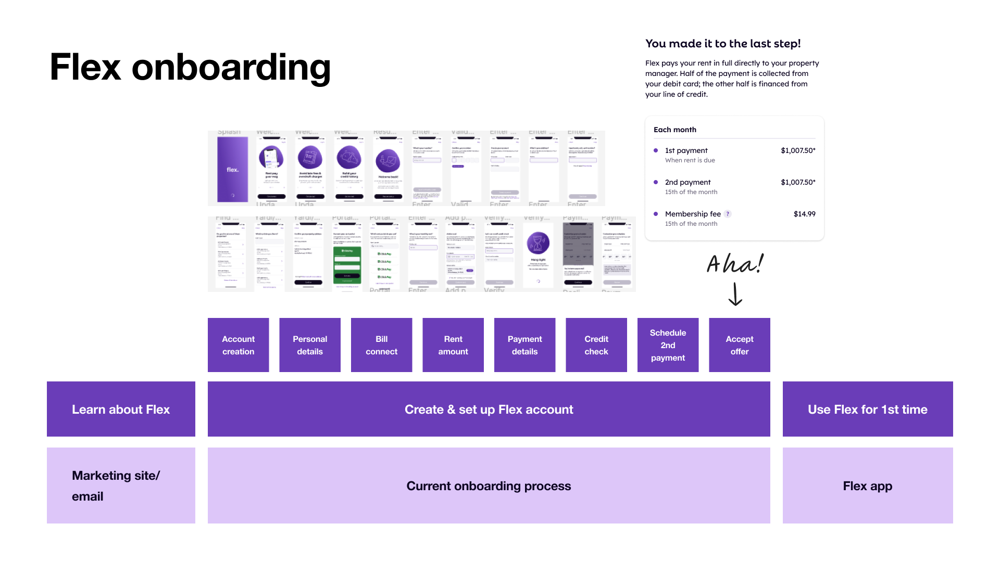

Flex Onboarding
November 2022 to August 2023 • Flex
Flex helps customers split their rent payment into two installments over the course of a month instead of having to pay their largest (!) recurring cost all in one chunk. Users pay their first installment when rent is due, then Flex pays their rent directly their property using this first payment and a credit line.
I was the primary product designer for the Consumer Growth business unit at Flex, leading the UX for product-driven growth. While I was working on user onboarding, I collaborated with 2 PMs, a small team of frontend engineers, and a rotating cast of marketing and analytics folks.
Problem
Flex onboarding had been almost exactly the same since the inception of the product. (Here we define onboarding as the account setup flow, from the first time a user clicks “Get Started”, all the way until they're ready to pay their next month's rent with Flex.)
There are a lot of screens and some very high friction steps (like a soft credit check). And the user has to get through the entire flow all at once! If they leave, they have to start over. There were some very obvious areas for improvement. Our challenge: which are the lowest hanging fruit and the highest impact improvements to make?
Framework
We framed onboarding with 3 different lenses:
- Vision: What is our north star goal for how onboarding looks?
- Optimization: What incremental changes can we make to get closer to our vision?
- Modularization: What do we technically need to do to enable our vision?
Vision exploration & research
We started with uncovering our north star vision. Fueled by years of reading UserOnboard teardowns and growth.design case studies, I built a series of wireframe prototypes that challenged the existing, highly linear structure of our onboarding flow. At a high level they are represented by these sketches:
We ran a handful of qualitative user interviews, asking questions about the order of steps and digging into the steps with the highest turnover. Separately, I interviewed a handful of our cross-functional partners in Legal & Compliance, Risk, Ops, and Customer Service to ask about their biggest pain points from both a business and user perspective.
Some of our learnings:
- Very concrete: we ask for payment method way too soon—people are not yet ready to commit to the product at that point, and fear that their card will be charged immediately
- More general: Users don't feel the “Aha!” moment until the very last step
- And overall, it's a lot to ask users to complete in one session (our analytics team dug into this and learned that 30% of our users take more than 30 days to sign up once they begin onboarding)
We used these learnings to prioritize particular areas for improvement and to inform the direction of change.
Optimization and modularization execution
Flex is in a relatively unique position where we see a huge spike in traffic right around when rent is due. We can leverage this to get very quick learnings for our various experiments, so we moved fast.
We ran 1 or 2 experiments per month, each of which typically focused on one particular step of onboarding; almost all (!) resulted in either positive or neutral changes to both stepwise and overall conversion. (We tried adding clicks/screens once or twice and it was a big flop.) I'll summarize the most successful below.
Resume onboarding
Due to a tangle of technical debt, users who left the onboarding flow would have to start from the beginning if they came back. We spent a couple months untangling and rejiggering the experience so that users could come back and get dropped back right where they were! We saw a +5.41% lift in signups here.
This also enabled our marketing team's retargeting efforts to be more effective at getting our users to the finish line (+2k in the first month).
Property connect optimizations
Depending on the user's property's relationship to Flex, some users had a lot more difficulty finding their property. They ran into redundant questions and jumped through some hoops to help us resolve some technical constraints.
We consolidated a couple screens and revamped the tech stack behind identifying user properties, plus introduced a couple features that helped pre-fill informations. Turns out if you reduce the amount of manual worka user needs to do, you can increase conversion (duh).
With these changes, we were able to lift conversion on this step by +8% and also reduce our costs by $5k a month.
Reordering the payment screen
We pushed asking users for a payment method to the back of the flow, and drove an impressive +3.69% lift in signups given the conceptually simple change in sequencing.
TL;DR
Changed a lot of small things, made a lot of impact.
Key takeaways:
- Less screens, less clicks typically = higher conversion
- Small changes can make big waves
- Need to balance costs (time AND money) with benefit